Instalaci√≥n y Configuraci√≥n de Active Directory en Windows Server üñ•Ô∏èüîê
En este artículo, te guiaré paso a paso para instalar y configurar Active Directory (AD) en un servidor Windows Server. Además, explicaré la estructura de AD (bosques, dominios, árboles, etc.), cómo crear usuarios en el dominio, cómo unir una máquina virtual con Windows 10 al dominio, y cómo mejorar la seguridad creando un nuevo usuario administrador y deshabilitando la cuenta de administrador predeterminada.
¿Qué es Active Directory?

Active Directory es un servicio de directorio desarrollado por Microsoft que se utiliza para gestionar usuarios, equipos, permisos y otros recursos en una red. Es una herramienta esencial en entornos empresariales, ya que permite centralizar la administración de la red y mejorar la seguridad.
Estructura de Active Directory
-
Bosque (Forest): Es el contenedor más grande en AD. Un bosque puede contener múltiples dominios y define un límite de seguridad. Todos los dominios dentro de un bosque comparten un esquema común, un catálogo global y una relación de confianza bidireccional.
-
Dominio (Domain): Es una agrupación lógica de objetos (usuarios, equipos, grupos, etc.) que comparten una misma base de datos de directorio y políticas de seguridad. Cada dominio tiene un nombre único (por ejemplo,
empresa.com). -
Árbol (Tree): Es una colección de dominios que comparten un espacio de nombres contiguo. Por ejemplo, si tenes un dominio principal
empresa.com, un subdominiosucursal.empresa.comformaría parte del mismo árbol. -
Unidades Organizativas (OU): Son contenedores dentro de un dominio que se utilizan para organizar objetos (usuarios, equipos, etc.) y aplicar políticas de grupo (GPO) de manera más granular.
-
Objetos: Son los elementos que se gestionan en AD, como usuarios, equipos, grupos y recursos compartidos.
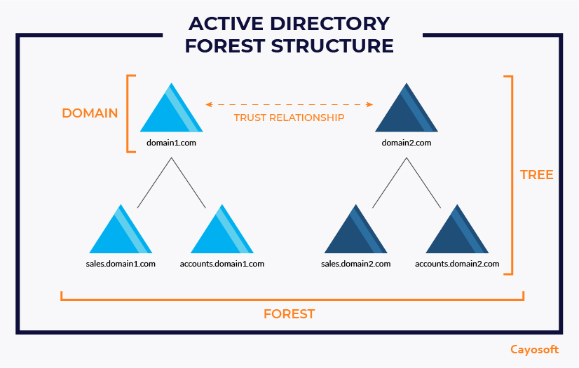
Instalación de Active Directory en Windows Server
Requisitos Previos
- Un servidor con Windows Server (2016, 2019 o 2022).
- Una dirección IP estática configurada en el servidor.
- Acceso de administrador al servidor.
Paso 1: Instalar el Rol de Active Directory
- Abri el Administrador del Servidor desde el menú Inicio.
- Clic en Agregar roles y características. 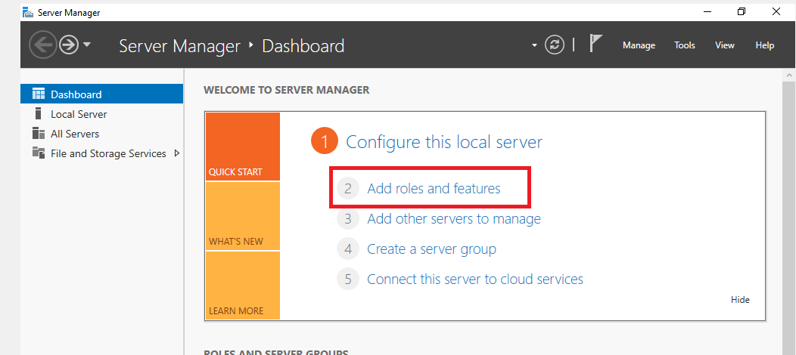
- En el asistente, elegi Instalación basada en roles o características y clic en Siguiente. 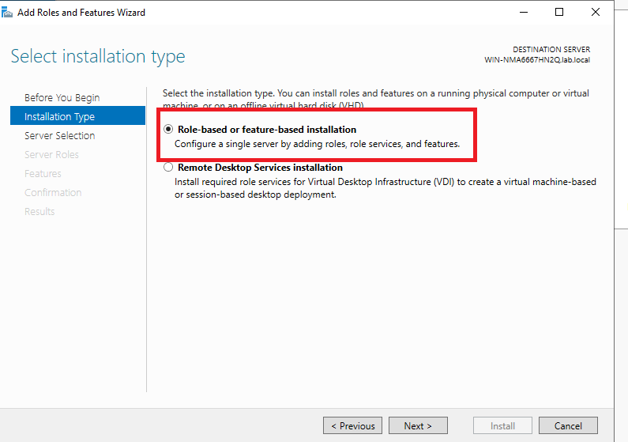
- Selecciona el servidor en el que deseas instalar AD y haz clic en Siguiente. 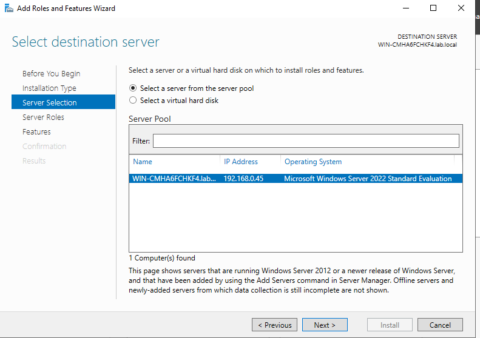
- En la lista de roles, marca Servicios de dominio de Active Directory.

- Clic en Agregar características cuando te lo solicite y luego en Siguiente.
- Completa el asistente y clic en Instalar.

Paso 2: Promover el Servidor a Controlador de Dominio
- Cuando termine de instalarse, vas a ver un link de color azul Promover este servidor a controlador de dominio, clic ahi.

- En el asistente, selecciona Agregar un nuevo bosque y escribe el nombre del dominio raíz (por ejemplo,
lab.local). 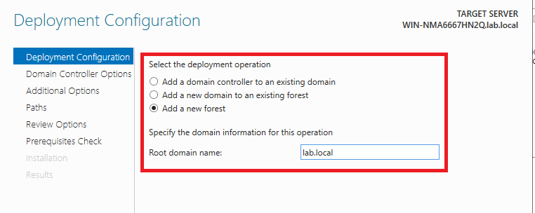 - Configura las opciones de nivel funcional del bosque y del dominio.
- Completa el asistente y haz clic en Instalar. El servidor se reiniciará nuevamente.
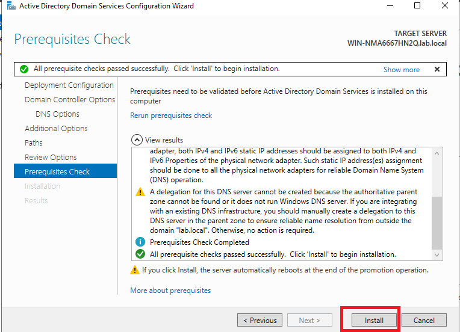

Crear un Nuevo Usuario Administrador y Deshabilitar la Cuenta de Administrador Predeterminada
Paso 1: Crear un Nuevo Usuario Administrador
- Abri Usuarios y equipos de Active Directory. 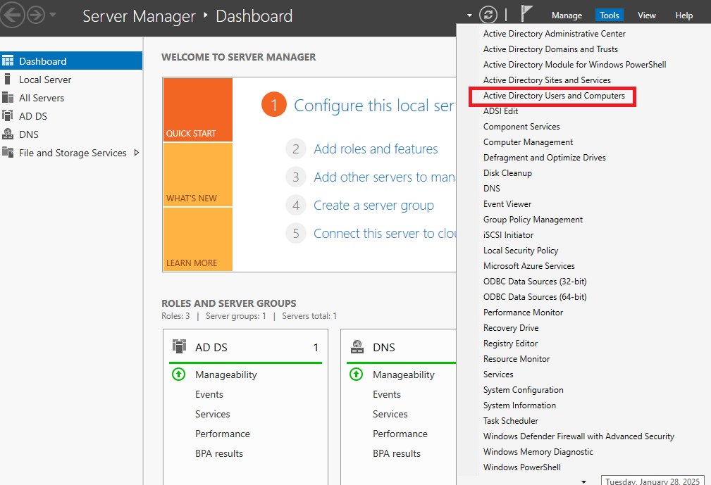
- Busca dentro de la carpeta del dominio que creaste, la carpeta Usuarios y clic en ella.
- Dentro de esta carpeta vas a copiar el usuario Administrador 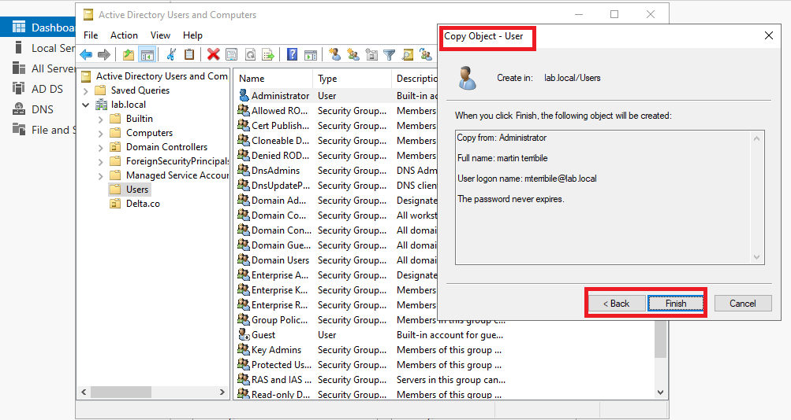
- Ya con el usuario nuevo creado, te recomiendo que revises que sea parte de los mismos grupos que el usuario Administrador
Paso 2: Deshabilitar la Cuenta de Administrador Predeterminada
- Abre Usuarios y equipos de Active Directory.
- Navega hasta la carpeta Usuarios.
- Busca la cuenta Administrador (su nombre completo es
Administrator). - Haz clic derecho sobre la cuenta y selecciona Deshabilitar cuenta.
- Confirma la acción cuando se te solicite.

Tip
Inicia sesion con el nuevo usuario administrador y luego deshabilita la cuenta de administrador predeterminada. Esto es crucial para evitar quedarte sin acceso administrativo.
Unir una Máquina Virtual con Windows 10 al Dominio
- Primero como buena practica, hay que verificar que mi maquina virtual tenga concetividad con el server de AD, el famoso
pingy que tambien resuelva el nombre de dominio - Navegaremos hacia Configuracion de Red e Internet 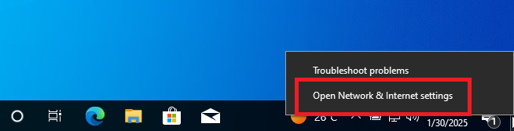
- Luego iremos a Cambiar configuracion de adaptador, abriremos el adaptador ethernet e iremos al protocolo ipv4
- Dentro de la cofiguracion del adaptador, colocaremos la direccion ip del servidor de active directory en dns predeterminado 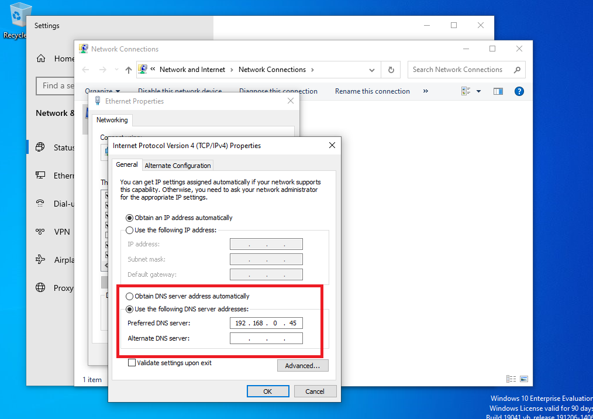
- Luego iremos a Acerca de esta pc y haremos clic en Renombrar esta PC

- Ahora solo agregaremos el Dominio que creamos anteriormente, y opcionalmente podremos cambiar el nombre de la pc

- Cuando hagamos clic en ok nos va a pedir las creedenciales de un usuario con permisos para añadir computadoras a dominio, en este caso colocaremos la del usuario que creamos anteriormente, ya que tiene los permisos de administrador. 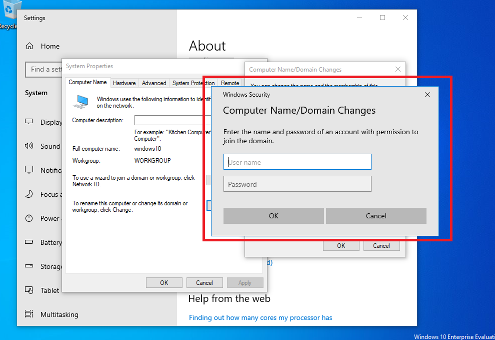
- Finalmente nos pedira reiniciar la computadora, y ya podremos logearnos dentro del dominio, si queremos corroborar si la pc se unio al dominio, iremos a al servidor, Usuarios y equipos de Active Directory, buscaremos nuestro dominio y dentro de el la carpeta equipos.

Preguntas Frecuentes (FAQ)
-
¿Puedo tener múltiples dominios en un solo bosque?
Sí, un bosque puede contener múltiples dominios, pero todos deben compartir un esquema común y una relación de confianza. -
¿Qué es el catálogo global en Active Directory?
El catálogo global es una base de datos que contiene información sobre todos los objetos en el bosque, lo que facilita las búsquedas y la autenticación entre dominios. -
¿Cómo puedo aplicar políticas de grupo a usuarios o equipos?
Las políticas de grupo (GPO) se pueden aplicar a Unidades Organizativas (OU) que contengan usuarios o equipos. Puedes configurar las GPO desde Administración de directivas de grupo. Lo vamos a ver en otro tutorial.